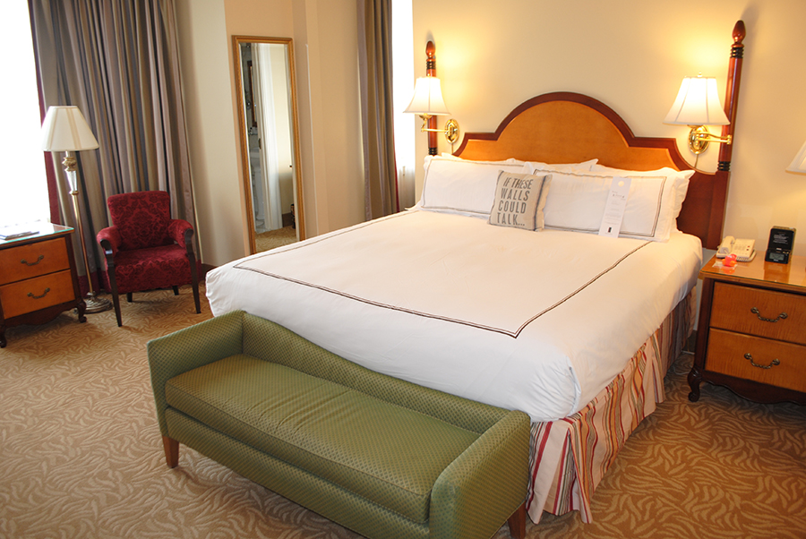

PAUSCHALEN FUR IHREN URLAUB IN OBERTAUERN - OSTERREICH

- 1 Seilbahn Berg-und Talfahrt in Obertauern
- 3 Ubernachtungen
- inkl.reichhaltigem Fruhstucksbuffet
- inkl.4-Gange-Abendmenu
AB $ 125,00 PRO PERSON

- 1 Seilbahn Berg-und Talfahrt in Obertauern
- 3 Ubernachtungen
- inkl.reichhaltigem Fruhstucksbuffet
- inkl.4-Gange-Abendmenu